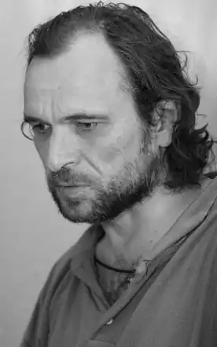
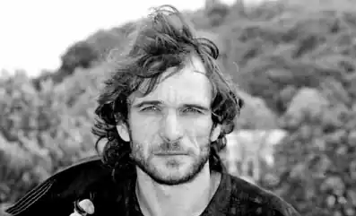

Олесь Ульяненко (справжнє ім'я Олександр Станіславович Ульянов; ) — український письменник, наймолодший лауреат Малої Шевченківської премії.
Народився 8 травня 1962, Хорол, Полтавська область, Українська РСР, СРСР. Закінчив школу № 2 міста Хорола (нині гімназія), навчався в Лубенському медичному училищі, у 1980 закінчив Миколаївське медичне училище. В молодості працював у Якутії, служив десантником у Радянській армії в Східній Німеччині та Афганістані. Вів напівволоцюжний спосіб життя у Центральній Росії, жив у панківському середовищі в Ленінграді.
У 1997 за роман "Сталінка" отримав малу Шевченківську премію. За твердженням самого Ульяненка, написаний ним спільно з Володимиром Тихим на основі "Сталінки" сценарій було пізніше несанкціоновано використано московським режисером Сельяновим як основу для фільму "Жмурки". У 2006 році вийшов роман "Знак Саваофа". У романі описувалися кримінальні схильності та збочення служителів Московського патріархату, а сам патріархат називався п'ятою колоною в Україні, яка ніколи не підтримувала української незалежності. За цей роман Московський патріархат оголосив письменнику анафему. У грудні 2009 у видавництві "Треант" вийшла кримінальна мелодрама "Там, де Південь", а навесні 2010, там само — друге видання книги "Жінка його мрії", презентація якого відбулася у вигляді провокаційного літературно-художнього перформансу в київській галереї "Карась". За життя був нагороджений преміями журналів "Сучасність", "Благовіст" та "Кур'єр Кривбасу". В останній рік життя переніс декілька інсультів. Помер 17 серпня 2010 у власній квартирі на 49-му році життя. Офіційна причина смерті — хронічна серцева недостатність.